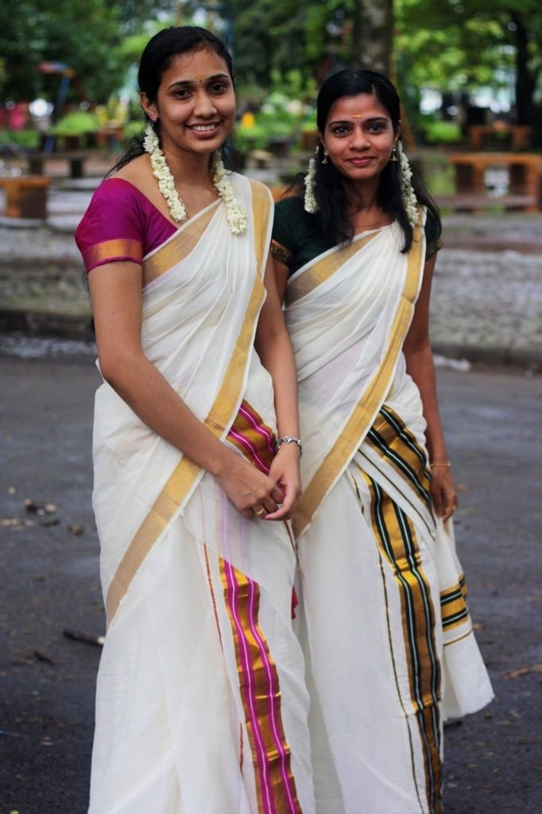
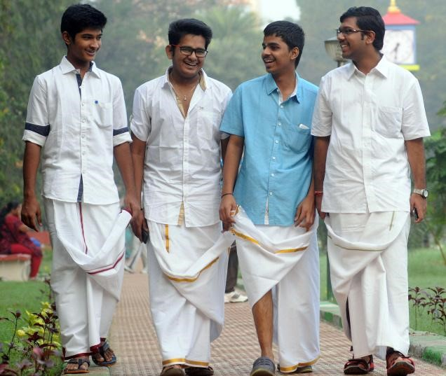
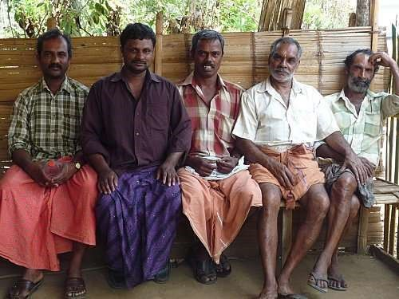

Indian fashion has always been a hilight among all that India offers. With its unique and colorful designs, India's fashion has become something
that many all over the world admire. Although there are many similiarities in fashion style across India, the various
states and regions of the country have developed their own style that represents the culture and poeple of those in the particular
region.
It should be noted that western culture has greatly influenced the fashion styles in Kerala.
As a result, both women and men do also wear jeans, t- shirts, and casual blouses in non-festive settings.

In special settings and celebrations, women in Kerala wear an attire known as mundum neriyatum (pronounced muhn-duh neh-ree-ah-tuhm).
This is a set of two mundus with a lower garment around one’s waist like men wear and an upper mundu which is wrapped around one’s upper body and left hanging from a shoulder.
Women wear this upper mundu with a blouse.

In Kerala, Men often wear the traditional clothing item called mundu (pronounced muhn-duh).
The mundu is a piece of cloth that is often white and is wrapped around males’ waists.
The border of the mundu is often decorated with embroidery or colors.
Often, men in Kerala wear a regular button up shirt or button-up t-shirt with the mundu.

However, in casual settings such as in houses or when doing labor work, men wear a garment called lungis (pronounced loon-gees). Lungis
are worn around one's waist and are similar to mundus. The difference is that lungis are pieces of clothing that are more comfortable, casual,
and usually colorful with patterns.